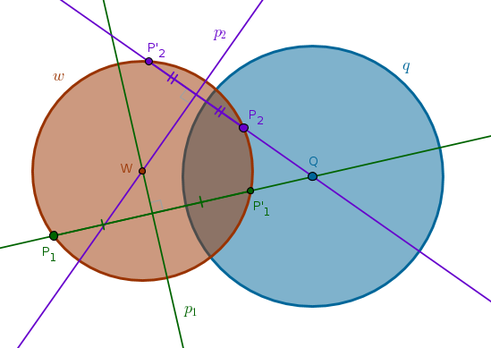
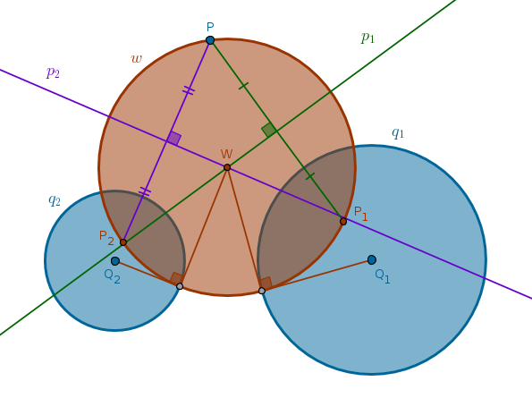
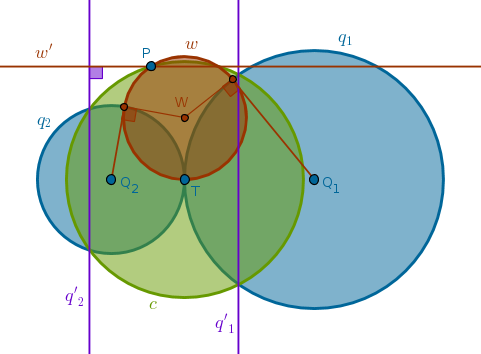
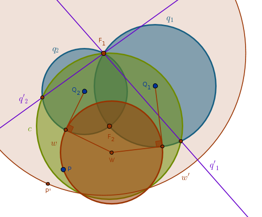
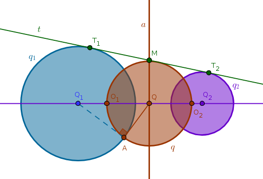
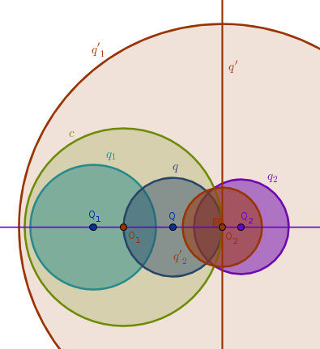

Orthogonal Circles
Problem 5
Construct a circle which is orthogonal to a given circle \(q(Q, R)\) and passes through two given distinct points \(P_1\) and \(P_2\)
The given points \(P_1\) and \(P_2\) can be located on the plane relative to \(q\) in a number of ways - both inside \(q\), both outside \(q\), one inside while the other outside \(q\), they can be on the circumference of \(q\), \(P_1\), \(P_2\) and \(Q\) can be collinear, etc.
Let us consider the case when a solution exists - for example \(P_1\) is outside and \(P_2\) is inside \(q\).
From ICP38 we know that in that case we can construct an infinite number of circles orthogonal to \(q\) and passing through \(P_1\). We invert \(P_1\) with respect to \(q\) with positive power into \(P'_1\) and bisect the \(LineSegment(P_1, P'_1)\) with \(p_1\). Any circle centered on \(p_1\) and passing through \(P_1\) or \(P'_1\) will be orthogonal to \(q\).
Hence, we can use the method of intersecting loci to locate the center of the circle that will be orthogonal to \(q\) and pass through \(P_1\) and \(P_2\). We invert \(P_2\) with respect to \(q\) into \(P'_2\). Bisect \(LineSegment(P_2, P'_2)\) with \(p_2\). The point where \(p_1\) and \(p_2\) intersect locates \(W\) - the center of the circle sought after whose radius is \(WP_1 = WP_2 = WP'_1 = WP'_2\):
A generic solution then is:
1) Invert \(P_1\) with respect to \(q\) with positive power into \(P'_1\)
2) Bisect \(LineSegment(P_1, P'_1)\) with \(p_1\)
3) Invert \(P_2\) with respect to \(q\) with positive power into \(P'_2\)
4) Bisect \(LineSegment(P_2, P'_2)\) with \(p_2\) until it intersects with \(p_1\) at \(W\)
5) \(Circle(W, WP_1 = WP_2 = WP'_1 = WP'_2)\) is the circle sought after
Problem 6
Construct a circle which is orthogonal to two given non-concentric circles \(q_1(Q_1, R_1)\) and \(q_2(Q_2, R_2)\) and passes through a given point \(P\)
Let us consider three cases: the given circles 1) are not in contact, 2) touch at \(T\), 3) intersect at \(F_1\) and \(F_2\).
Case 1
The given circles are not in contact.
It is interesting that this solution mimics the solution of the previous problem with a minor adjustment. Instead of inverting two distinct points with respect to the same circle here we invert the same point with respect to two distinct circles. Other than that the method of intersecting loci works just the same:
1) Invert \(P\) with respect to \(q_1\) with positive power into \(P_1\)
2) Bisect \(LineSegment(P, P_1)\) with \(p_1\)
3) Invert \(P\) with respect to \(q_2\) with positive power into \(P_2\)
4) Bisect \(LineSegment(P, P_2)\) with \(p_2\) until it intersects with \(p_1\) at \(W\)
5) \(Circle(W, WP = WP_1 = WP_2)\) is the circle sought after
Case 2
The given circles touch at \(T\).
Let us consider the case when the given circles touch externally. If \(P \equiv T\) then the problem has an infinite number of solutions. Any circle with a center on a common tangent passing through \(T\) will be orthogonal to \(q_1\) and \(q_2\).
If \(P \not\equiv T\) then inverting \(q_1\) and \(q_2\) with respect to \(c(T, TP)\) with positive power will transform them into parallel lines \(q'_1\) and \(q'_2\) (ICP33) while \(P\) will remain fixed.
The solution then must be either a straight line or a circle that must pass through \(P\) and be orthogonal to two parallel straight lines. Since it can not be a circle, it must be a straight line \(w'\) passing through a given point perpendicular to two parallel straight lines - a unique solution.
Invert the straight line \(w'\) with respect to \(c(T, TP)\) with positive power to obtain the circle sought after:
1) Invert \(q_1\) and \(q_2\) with respect to \(c(T, TP)\) with positive power to obtain the parallel straight lines \(q'_1\) and \(q'_2\)
2) Perpendicular \(w'\) to \(q'_1\) and \(q'_2\) through \(P\)
3) Invert \(w'\) with respect to \(c(T, TP)\) with positive power to obtain \(w\) - the circle sought after
Case 3
The given circles intersect at \(F_1\) and \(F_2\).
If \(P \equiv F_1\) (or \(P \equiv F_2\)) then a circle sought after exists only if the radius of one of the given circles is zero. That is not interesting.
If \(P \not\equiv F_1\) and \(P \not\equiv F_2\) then inverting \(q_1\) and \(q_2\) with respect to \(c(F_2, F_2F_1)\) with positive power will transform them into two distinct straight lines \(q'_1\) and \(q'_2\), each of which passes through \(F_1\) (ICP15), and inverting \(P\) with respect to \(c(F_2, F_2F_1)\) with positive power will transform it into \(P'\).
The solution then must be either a straight line or a circle which must pass through \(P'\) and be orthogonal to two straight non-parallel lines. Since it can not be a straight line, it must be a circle \(w'(F_1, F_1P')\) - a unique solution.
Invert the circle \(w'(F_1, F_1P')\) with respect to \(c(F_2, F_2F_1)\) with positive power to obtain the circle sought after:
1) Invert \(q_1\) and \(q_2\) with respect to \(c(F_2, F_2F_1)\) with positive power to obtain two distinct straight lines \(q'_1\) and \(q'_2\) intersecting at \(F_1\)
2) Invert \(P\) with respect to \(c(F_2, F_2F_1)\) with positive power to obtain \(P'\)
3) \(Circle(F_1, F_1P') = w'\)
4) Invert \(w'\) with respect to \(c(F_2, F_2F_1)\) with positive power to obtain \(w\) - the circle sought after
Problem 7
Find a circle of inversion with respect to which any two circles \(q_1(Q_1, R_1)\) and \(q_2(Q_2, R_2)\) that are not in contact can be inverted into two concentric circles
Only two cases are possible here - the given circles are outside one another or one circle is inside the other. Let us look at the first case.
Without the loss of generality let us assume that \(R_1 \geqslant R_2\). This is Case 1 from Radical Axis section. From that case we remember that a radical axis \(a\) of \(q_1\) and \(q_2\) is a locus of centers of circles orthogonal to \(q_1\) and \(q_2\). Out of infinite number of such circles let us pick one centered at the intersection of \(a\) and \(Line(Q_1, Q_2)\) - point \(Q\).
That circle, \(q\), will intersect \(Line(Q_1, Q_2)\) at two points - point \(O_1\) and point \(O_2\). The circle of inversion sought after can be either \(Circle(O_1, O_1O_2)\) or \(Circle(O_2, O_2O_1)\). Make the power of inversion positive: 
Let us pick \(Circle(O_1, O_1O_2)\) as a solution circle, \(c\). Under the inversion with respect to \(c\) with positive power \(Line(Q_1, Q_2)\) inverts into itself (ICP9).
Since \(q\) passes through the center of inversion \(O_1\) and touches \(c\) at \(O_2\), under the inversion with respect to \(c\) with positive power it inverts into a straight line \(q'\) through \(O_2\) perpendicular to \(Line(Q_1, Q_2)\) (ICP17).
Since neither \(q_1\) nor \(q_2\) pass through the center of inversion, their images under the inversion with respect to \(c\) with positive power will be circles \(q'_1\) and \(q'_2\). From ICP22-29 it follows that the centers of \(q'_1\) and \(q'_2\) must be collinear and, hence, must be located somewhere on \(Line(Q_1, Q_2)\).
But we know that inversion preserves angles so if \(q\) is orthogonal to \(q_1\) and \(q_2\) then its image, \(q'\), must also be orthogonal to \(q'_1\) and \(q'_2\). Since \(q'\) is a straight line and \(q'_1\) and \(q'_2\) are circles, their centers must be somewhere on \(q'\). The only location that satisfies both requirements at once is the intersection of \(Line(Q_1, Q_2)\) and \(q'\) - the point \(O_2\) which, in turn, means that \(q'_1\) and \(q'_2\) are concentric:
A generic solution for the first case then is:
1) \(Line(Q_1, Q_2)\)
2) One external tangent \(t\) common to both circles touching \(q_1\) at \(T_1\) and \(q_2\) at \(T_2\)
3) Bisect \(LineSegment(T_1, T_2)\) to locate \(M\): \(MT_1 = MT_2\)
4) Perpendicular \(a\) to \(Line(Q_1, Q_2)\) through \(M\) to locate their intersection point \(Q\)
5) Tangent to \(q_1\) through \(Q\) touching \(q_1\) at \(A\)
6) \(Circle(Q, QA)\) until it intersects \(Line(Q_1, Q_2)\) at \(O_1\) and \(O_2\)
7) \(Circle(O_1, O_1O_2)\) is the inversion circle sought after. Make the inversion power positive
The remaining case when one circle is inside the other is solved similary.
\(\blacksquare\)